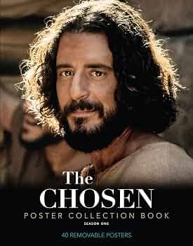

is a Christian historical drama series created by Dallas Jenkins that [Highlight start] follows the life and ministry of Jesus of Nazareth through the eyes of those around him [Highlight end] . Though often watched in theaters as special events, it is a multi-season show rather than a standalone movie.